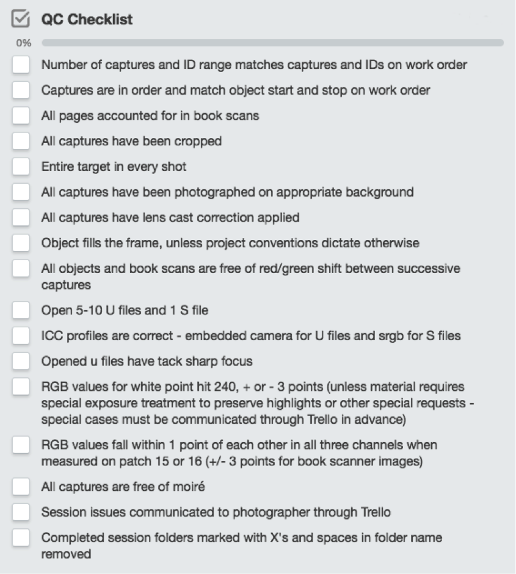

Summary - This document provides an overview and step-by-step walkthrough of the quality control process after imaging is complete. The quality control process happens after processed files have been uploaded to a shared working space server (currently ICE, or Isilon Cluster E) and before ingest into the repository. The process ensures that processed files meet minimum viable imaging specifications, files have been properly formed for long term storage, and images have been named so as to correctly match metadata. Imaging specifications are based on the FADGI four star guidelines outlined here .
Checklist - Below is the most current checklist for in-house reflective imaging quality control.

The vast majority of still image digitization at New York Public Library consists of reflective imaging whereby a light source is directed at an object and the light reflected off the object is captured by the camera. The alternative, transmissive imaging, is a digitization process whereby light transmits through translucent objects such as negatives, glass plates, and microfilm before being captured by the camera. The current quality control checklist for transmissive media can be seen here .
Process Description - The quality control process is a team effort that requires contributions from all Collections Photographers. The process is maintained and organized with the DIU Workflow Trello board. Every project, exhibition, or public order is broken down into discrete units or items with a corresponding work order. In other words, each public order or volume of a set or box of a collection or exhibition grouping is reflected by its own Trello card and MMS work order. A link to the relevant work order is available on every Trello card. Each Trello card is placed on the board according to the item’s status in the digitization process. As materials are received by the DIU, cards are added to the Materials Received list. Public orders are added directly to either the SASB Public Orders list or the LSC Public Orders list. When a project is assigned to a photographer and a workstation, the card is moved to the relevant workstation list and the photographer is added to the card. Once imaging is complete and processed files have been uploaded to the working space server, the card is moved to the bottom of the QC list (time-sensitive projects, such as public orders and exhibitions, can be placed at the top of the QC list). As photographers complete a session and add their cards to the QC list, the next step is to take a card from the top of the QC list and perform quality control on another photographer’s work. Sharing the quality control process has many advantages including impartiality, a shared workload, a view into another photographer’s output and techniques, a close look at other materials being digitized, and an encounter with the scope of the larger project of digitization at the library.
Reflective Imaging QC Workflow Walkthrough
1. After completing a work order and adding a card to the bottom of the QC list in Trello, take a card from the top of the QC list from another photographer and open the work order and session folder on the server.
2. Open session folder and begin by noting number of captures. Compare to number of captures on work order. There should be an S file (Service File - tif file in srgb color space cropped just beyond the edge of the material for the web) and a U file (Uncropped Master - tif file with embedded custom camera profile uncropped and an item level color control target included) for every capture, so there should always be an even number of files in a session folder. If number of captures is odd or if there are fewer captures than on work order, then captures are missing - leave a note in Trello for the photographer at this point. Check first and last Capture Sequence number on work order and first and last filename in folder to make sure files are named correctly. Check out of sequence IDs individually. Checking Image IDs is incredibly important so as not to mistakenly overwrite other captures. (Tip: use “home” and “end” keys on keyboard to quickly jump to the top or bottom of window/list or within a work order - to avoid scrolling)
3. Switch to icon view and increase thumbnail size to maximum, then adjust window to display two columns of captures using “Clean Up By > Name” option in finder settings. Scroll through images and look for missing crops. Note missing crops in Trello.
4. Scroll through images and check to make sure images are in order, comparing with work order if necessary. For full book scans, verify there are no missing pages by looking at every page number. There may be a need to compare to the object itself, if there are no page numbers. For work orders with multiple objects, verify that the beginning and end of each object aligns with work order. If there are page number anomalies, leave a note in Trello for the photographer.
5. Scroll through images and check that opaque objects have been photographed on grey seamless, translucent objects photographed on white or off-white, tipped-in letters photographed on neutral matte board, and book scanner images have black background. Note any images that appear to be on the wrong background in Trello.
6. Scroll through images and do a cursory exposure, color, and composition check. Look for even exposure across the session. Icon view in finder is a good method for catching missing lens cast corrections (corners will be dark). Predictable red and green shifts, especially on full book scans, should be sent back for reprocessing. Object should fill frame unless otherwise explicitly stated at beginning of project.
7. Check that all U files are oriented correctly. There are a lot of judgement calls to be made in this area, so a conversation may be necessary. However, the majority of cases are easy to spot and involve U files being processed with the wrong orientation.
8. Inverted images, such as black and white negatives and microfilm should be reinverted for the web and repository. Black and white negatives and microfilm should be processed out as positives (both S & U files). Transparencies should be captured and archived to match their original positive state. Inverted positive prints (such as photostats) should remain true to the original with reversed values.
9. Open 5-10 U files and 1 S file at random per session in Photoshop and check for the following:
Embedded camera profile for U files and srgb profile for S files (S file can be closed at this point)
Even focus across object including center and all four corners
White point should hit 240 in RGB values (+ or - 3 points), check that highlights do not cause color information to be clipped in any channel, book cradle shots evenly lit across page (no highlights near gutter), no distracting shadows or dark patches on object, object is evenly lit
Middle grey values should be the same across all three RGB channels. When using a Golden Thread target, either patch 15 should read 130 across all three channels or patch 16 should read 96 across all three channels (+ or - 1 point difference across each channel). Checking the neutral balance is best done at 100% and using the eyedropper tool with the sample size set to 11 by 11 Average. If there is a big jump in point differences between channels, such as a 4 point difference among individual channels, the neutral balance may not have carried forward in the Capture One session and/or may need to be adjusted and reprocessed. Exceptions can be made for book scanner images due to difficulty in matching color across two camera systems.
Ensure that color is neutral and consistent across session. Pay close attention to any suspicion that a shot may be too red or green. Compare with original if necessary to verify. Open 4-6 pages in succession for full books scans and compare captures for opposing pages by displaying together. Any noticeable red/green shift should be noted in Trello and sent back to photographer for rebalancing. Assist photographer with troubleshooting, correcting inconsistent exposures before adjusting color balance.
Object fills the frame (unless shooting conventions for a project have determined otherwise - please ask photographer in Trello about this if need be), evenly lit complete target in every shot along edge of frame - at same height as the object
Check for moire - especially likely with halftone reproductions, etchings, crayon lithography, or any other mechanical print process with tightly hatched lines. (sometimes apparent with certain types of fabric samples as well)
10. After files have been checked and any issues resolved by the photographer, sessions need to be renamed with work order Image IDs. If Image IDs weren’t pre-populated, click Populate image_ids for everything on order at the top of the work order. After Image IDs have been populated, click Copy all Capture IDs to copy the work order IDs in sequence to the clipboard. Then, open Terminal and type “renamer” and press return. The script will prompt you for a directory to rename. Drag your server session folder into the Terminal window and press return. When prompted for Image IDs, press Command+V to paste Image IDs from the clipboard into Terminal and then press return. The script will rename files from Capture Sequence number to Image ID.
11. Rename server session folder to begin and end with X. Make sure there are no spaces in the folder name. A chron job will grab these files and move them to the rtg (ready to go) folder for overnight derivative creation in the Image Processor and move everything into the repository. If you’re working on a public order or another time-sensitive project, you can use rsync to move files into nfs://ice.repo.nypl.org/ifs/ice/rtg for immediate processing.
12. Move the Trello card into the Repo Check list, which will alert the photographer that files have been uploaded and will soon be ready for repository check.
Transmissive Media Imaging Quality Control
Full walkthrough is forthcoming, but will include additional points of interest like the following:
light leaks
Chemical stains or residue on film or dirt that was not able to be removed with air or light use of a cotton swab
illumination/staining (Uneven densities/tones and occasional staining caused by poorly processed film)
damaged film (i.e. peeling or loss of partial emulsion)
5 point focus check - visible grain at 100% view
Vendor and Other External Digitization Quality Control
Quality control of vendor digitization is an inherently different process than that done in-house. With still image digitization, items sent out to vendors tend to be stably-bound volumes that are being digitized strictly for access to the information in the volumes and often to achieve a full-text searchable PDF as endpoint. The image quality standards in this situation are less strict than our in-house preservation-quality standards. However, we do send out manuscripts and microfilm as well, and these collections provide their own challenges when digitized in bulk through a vendor. Our Mass Digitization Coordinator is still developing the workflow for these collections, but the specifications sent to vendors are listed below in the meantime.
Manuscripts and Microfilm
File Organization and Naming:
Files will be organized into a hierarchical directory format based on item, volume, or other logical unit of separation. Files will be named in sequential order, with file names corresponding to file organization. NYPL will provide directory structure and file naming conventions for vendor to adhere to.
Preservation master filenames (uncropped), must contain a “u” and service filenames (cropped), must contain an “s”.
Filenames must have the proper .tif extension.
File and directory names may not contain the following: spaces, special characters.
Each preservation master file must have a corresponding service file, and vice-versa. There must be the same number of images per object in both the preservation master and service file directories. Oversize materials, such as fold out maps, will be imaged separately and placed in a separate directory, with their placement within the original object noted with an image placeholder.
File Format Specifications for Manuscripts:
Vendor will create two file types: preservation master file (uncropped) and service file (cropped). Both files will follow the conventions and technical specifications of the uncompressed TIFF file format. One file will be delivered per page captured.
|
File Type |
Preservation Master File (Uncropped) |
Service File (Cropped) |
|
Bit Depth |
8 |
8 |
|
Colorspace (embedded icc profile) |
Adobe RGB (1998) |
sRGB IEC61966-2.1 |
|
File Extension |
.tif |
.tif |
|
Rotation and cropping |
Rotate files to correct rotation but do not crop. |
Rotate and crop files. Cropped files must be cropped to the manuscript with a ¼” border or less around entire page (including gutter). |
|
Resolution |
All files will be delivered at minimum 400 true ppi, without interpolation. The manuscript will fill the frame. |
All files will be delivered at minimum 400 true ppi, without interpolation. The manuscript will fill the frame. |
|
Targets |
Object-level targets will be included in frame with every capture. |
If object-level target cannot be included in every capture, the first capture of every session will include a color checker with greyscale photographed with same lighting conditions as session. If multiple cameras are used, their corresponding targets should be included, and indicated in the filename. |
|
Curves |
Tone curves will be set to linear for all captures. Files must not be delivered with an S curve. |
Tone curves will be set to linear for all captures. Files must not be delivered with an S curve. |
|
Exposure |
Exposure readings on white patch of object level target or color checker will be within 5 points of 240 in rgb values for processed tifs. An even lighting adjustment will be applied to all files or background will be exposed evenly so that all RGB values fall within a 10 point tolerance. |
Exposure readings on white patch of object level target or color checker will be within 5 points of 240 in rgb values for processed tifs. An even lighting adjustment will be applied to all files or background will be exposed evenly so that all RGB values fall within a 10 point tolerance. |
|
Color and Neutral Balance |
Each file will be neutrally balanced using middle grey object level target patches. RGB channels of middle grey patches on processed files will be within 1 point. Color must be consistent across surface of manuscript and throughout session. |
Each file will be neutrally balanced using middle grey object level target patches. RGB channels of middle grey patches on processed files will be within 1 point. Color must be consistent across surface of manuscript and throughout session. |
|
Sharpening |
Minimal sharpening will be applied to all files, ideally no more than 90% with a pixel radius of no more than 1. |
Minimal sharpening will be applied to all files, ideally no more than 90% with a pixel radius of no more than 1. |
File Format Specifications for Microfilm:
Vendor will create two file types: preservation master (uncropped) and service file (cropped). Both files will follow the conventions and technical specifications of the uncompressed TIFF file format.
|
File Type |
Preservation Master File (Uncropped) |
Service File (Cropped) |
|
Bit Depth |
8 |
8 |
|
Colorspace (embedded icc profile) |
Grey Gamma 2.2 |
Grey Gamma 2.2 |
|
File Extension |
.tif |
.tif |
|
Rotation and cropping |
Rotate files to correct rotation but do not crop. The image will fill the frame. |
Rotate and crop files. Cropped files must be cropped to the manuscript with a ¼” border or less around entire page (including gutter). The image will fill the frame. |
|
Resolution |
All files will be delivered at minimum 300 true ppi. |
All files will be delivered at minimum 300 true ppi. |
|
Targets |
All filmed targets will be digitized. |
All filmed targets will be digitized. |
Technical Metadata:
Technical metadata must be embedded into the image file according to the EXIF standard. Technical metadata should not be removed from files when creating derivatives. When using software to process files, ensure that any options to remove EXIF metadata are off.
File Delivery:
Files must be delivered on hard drives formatted for interoperability between Mac OSx and Windows operating systems. Recommended hard drive formatting is exFAT.
Files must be delivered with checksum manifests at the directory level. The purpose of image file checksums is to ensure that items are transferred safely throughout the entire chain of custody, and to ensure their long-term preservation. NYPL recommends using the BagIt file packaging format: https://en.wikipedia.org/wiki/BagIt and creating “bags” for each directory containing images. If vendor is unable to utilize the BagIt packaging format, a spreadsheet with file names and corresponding checksums will be satisfactory.
Delivered files must not include Thumbs.db, .DS_Store, and other hidden system files.